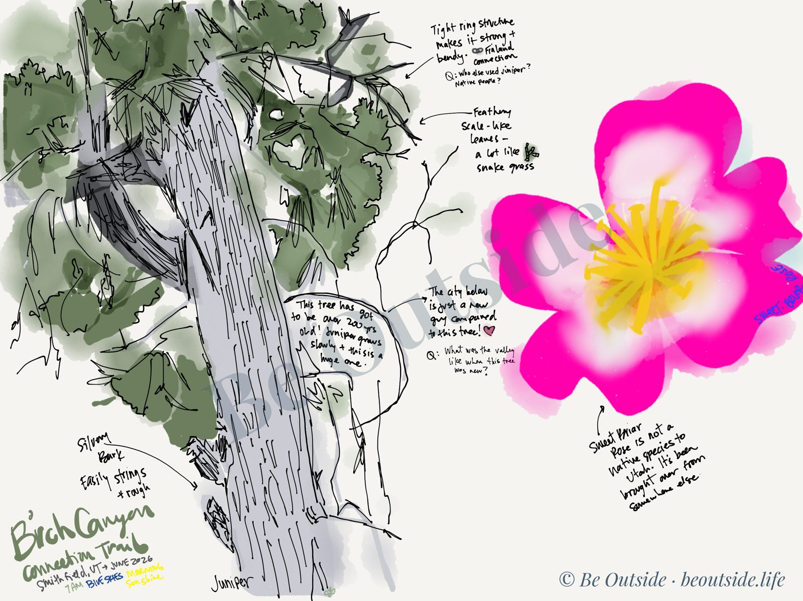
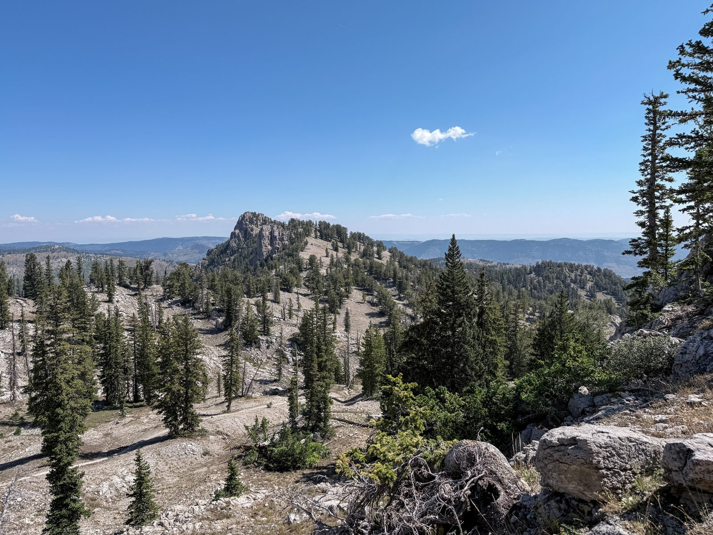
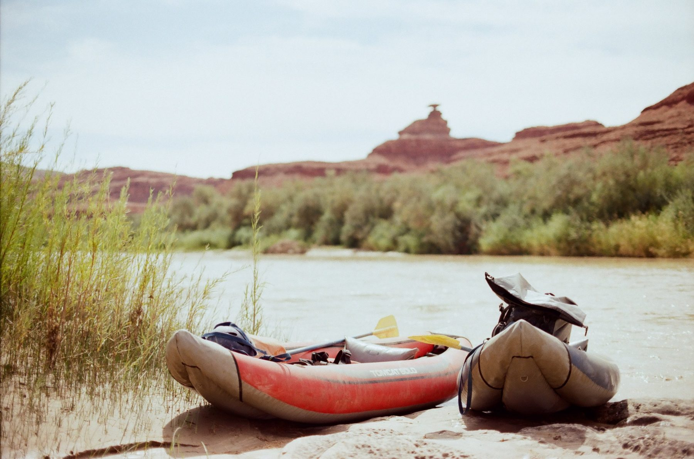
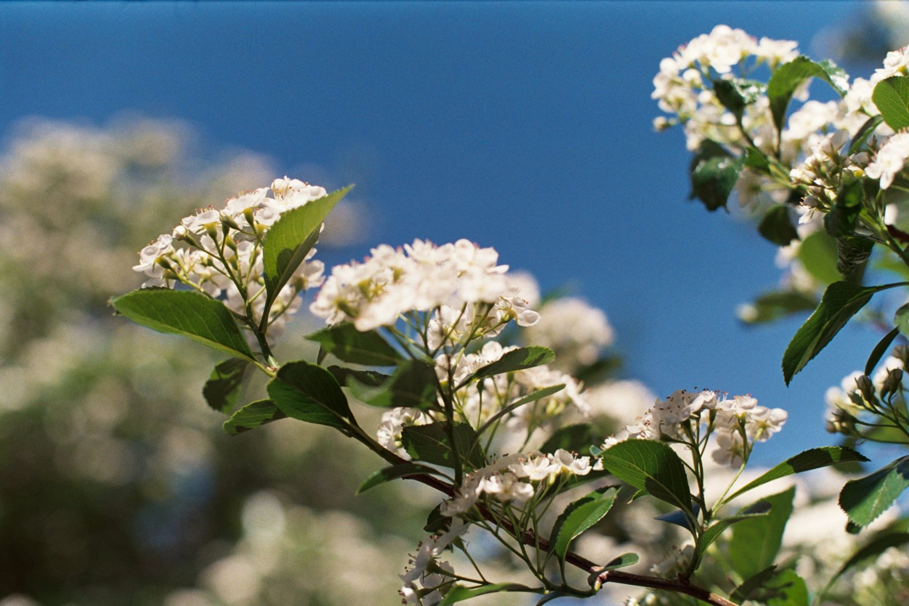

Be Outside · Outdoor Experiences
Filmed trail and river experiences with teacher guides and student materials, built so students can feel the land whether or not they can get there. No field trip budget, permission slip or nearby trailhead required.
How experiences work
Each one includes filmed footage, a teacher guide and student learning materials: everything you need to run it Monday morning.
Play the film with your class. I narrate from the trail, modeling observation and inquiry, and timer footage lets students work while the landscape rolls behind them.
Students step outside wherever they are, the school yard, a sidewalk, a park, apply what they learned, then come back and share. Breathe for Change moments open and close every experience.
The experiences
Each experience is built around a real location: its geology, its ecology, its Indigenous history and what's happening there right now. The trail to Birch Creek mixes plants that have grown in Cache Valley for centuries with newcomers people brought from far away. The San Juan River sits at the center of water debates across the Southwest. Mt. Naomi is a national forest balancing grazing, recreation and conservation. Students learn to read a landscape the way they'd read a headline.

Walk the trail to Birch Creek in Cache Valley from anywhere: a short film, four lessons in noticing, wondering and connecting, two leveled readings and a nature journal. Grades 3–8.
Open Trail Walk →

From alpine meadows to the summit ridge, students identify the plants and rocks of Utah's high country while following the Haudenosaunee story of the Great White Pine.

Canyon walls, cottonwoods and the living history of one of the Southwest's most storied rivers. Ecology, observation and place-based storytelling on the water.

Nature Walks · Not just for students
The same filmed walks open and close every Be Outside workshop. Teachers, school leaders and business teams slow down, breathe and spend a few minutes on the trail before they get back to work. It's the first hour you win back, practiced together.
Philosophy
Every experience is rooted in a specific place and the communities who have known it longest. Location isn't backdrop. It's curriculum.
Grounded in CLASP research on Indigenous pedagogy. We ask whose stories get told about a landscape and work to expand that circle.
Every experience maps to real classroom standards, built to teach, not just inspire. Open it up and go.
Breathe for Change practices run through every experience as the rhythm that holds the learning together.
More learning design
Curriculum
An NSF-funded curriculum I designed as the teacher for the CLASP collaborative, revised until knowledge holders approved.
Curriculum
Perspective taking through civic participation, presented at the NCSS conference with the CLASP team.
Tools
Field tools, writing feedback and mini-courses designed by a classroom teacher.
Don't wait for summer vacation.